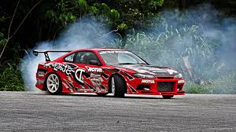
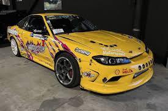
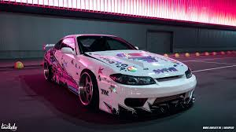

S10 იყო პირველი მასობრივი წარმოების Silvia, რომელიც აშენდა სრულიად ახალ S პლატფორმაზე, რომელიც განკუთვნილი იყო როგორც Nissan-ის კომპაქტური, უკანა წამყვანი, სპორტული მანქანის პლატფორმა.[7] იაპონური ვერსიები იყო ექსკლუზიური Nissan იაპონური დილერებისთვის, სახელწოდებით Nissan Prince Store და უფრო დიდი C110 Skyline. S10 გამოირჩეოდა ნაკლებად "ტრადიციული" ხაზებით, ვიდრე კონკურენტების Toyota-სა და Mazda-ს მსგავსი შეთავაზებები, რომლებიც საერთო გარეგნობას იზიარებდნენ უფრო დიდ Skyline-თან. თავდაპირველად, S10 განკუთვნილი იყო მბრუნავი ძრავით მომარაგებისთვის, თუმცა ეს იდეა გაუქმდა 1970-იანი წლების ნავთობის კრიზისის გამო.[8] S10 დაფუძნებული იყო Datsun Sunny Coupe-ზე. იაპონია იაპონიაში, S10-ს, რომელსაც ოფიციალურად ეწოდა "New Silvia" თავდაპირველად დაყენებული იყო 1.8 ლიტრიანი L18S სწორი ოთხი ძრავით, რომელსაც ის იზიარებდა Datsun 610/Bluebird 180B-თან. იაპონურ ვერსიაში წარმოდგენილი იყო Nissan NAPS ემისიის კონტროლის ტექნოლოგია მისი დანერგვისას. 1976 წელს S10-მა მიიღო პირველი განახლება, რომელიც მოიცავდა ახალ მორთულობის დონეს "Type-LSE", რომელმაც მიიღო ახალი L18E ძრავა, რომელსაც კარბურატორის ნაცვლად ჰქონდა საწვავის ინექციის ელექტრონული შეყვანა. ეს განახლება ასევე მოიცავდა მოდელის სახელის ცვლილებას, S10-დან S11-მდე. 1977 წელს S11-მა მიიღო განახლებები, მათ შორის ინტერიერის განახლებები, სხეულის ფერის წინა ცხაური, ახალი ბორბლები, ახალი ქუდები, ახალი რეზინის ბამპერის კუთხეები, ახალი მორთულობის დონე "Type-G" და სხვა დამატებითი ნაწილები და ფერები.
  